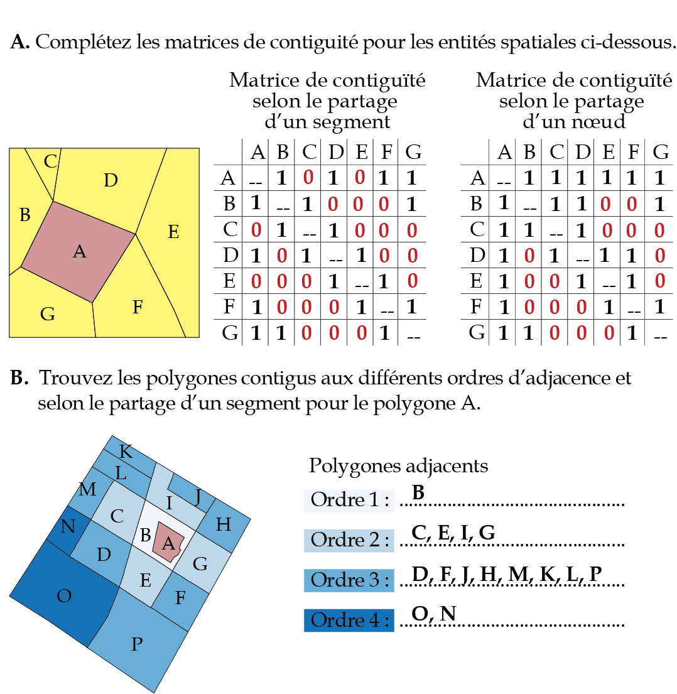

library(sf)
## Importation des deux couches
Arrond <- st_read("data/chap01/shp/Arrondissements.shp", quiet = TRUE)
Rues <- st_read("data/chap01/shp/Segments_de_rue.shp", quiet = TRUE)
## Création d'un objet sf pour l'arrondissement des Nations : requête attributive
table(Arrondissements$NOM)
Arrond.DesNations <- subset(Arrondissements,
NOM == "Arrondissement des Nations")
## Découper les rues avec le polygone de l'arrondissement des nations
Rues.DesNations <- st_intersection(Rues, Arrond.DesNations)9 Correction des exercices
9.1 Exercices du chapitre 1
9.1.1 Exercice 1
9.1.2 Exercice 2
library(sf)
library(tmap)
## Importation des deux couches
AD.RMRSherb <- st_read(dsn = "data/chap01/gpkg/Recen2021Sherbrooke.gpkg",
layer = "SherbAD", quiet = T)
HotelVille <- data.frame(ID = 1, Nom = "Hotel de Ville",
lon = -71.89306, lat = 45.40417)
HotelVille <- st_as_sf(HotelVille, coords = c("lon","lat"), crs = 4326)
## Changement de projection avant de s'assurer que les deux couches aient la même
HotelVille <- st_transform(HotelVille, st_crs(AD.RMRSherb))
## Ajout d'un champ pour la distance en km à l'hôtel de Ville pour les secteurs de recensement
AD.RMRSherb$DistHVKM <- as.numeric(st_distance(AD.RMRSherb,HotelVille)) / 1000
## Cartographie en quatre classes selon les quantiles
tmap_mode("plot")
tm_shape(AD.RMRSherb)+
tm_fill(col= "DistHVKM",
palette = "Reds",
n=4,
style = "quantile",
title ="Distance à l'hôtel de Ville (km)")+
tm_borders(col="black")9.1.3 Exercice 3
library(sf)
## Importation de la couche des divisions de recensement du Québec
DR.Qc <- st_read(dsn = "data/chap01/gpkg/Recen2021Sherbrooke.gpkg",
layer = "DivisionsRecens2021", quiet = T)
## Importation du fichier csv des division de recensement
DR.Data <- read.csv("data/chap01/tables/DRQC2021.csv")
## Jointure attributive avec le champ IDUGD
DR.Qc <- merge(DR.Qc, DR.Data, by="IDUGD")
## Il y a déja deux champs dans la table pour calculer la densité de population :
## SUPTERRE : superficie en km2
## DRpop_2021 : population en 2021
DR.Qc$HabKm2 <- DR.Qc$DRpop_2021 / DR.Qc$SUPTERRE
head(DR.Qc, n=2)
summary(DR.Qc$HabKm2)9.1.4 Exercice 4
library(sf)
## Importation du réseau de rues
Rues <- st_read("data/chap01/shp/Segments_de_rue.shp", quiet=T)
unique(Rues$TYPESEGMEN)
## Sélection des tronçons autoroutiers
Autoroutes <- subset(Rues, TYPESEGMEN == "Autoroute")
## Création d'une couche sf pour le point avec les coordonnées
## en degrés (WGS84, EPSG : 4326) : -71.91688, 45.37579
Point1_sf <- data.frame(ID = 1,
lon = -71.91688, lat = 45.37579)
Point1_sf <- st_as_sf(Point1_sf, coords = c("lon","lat"), crs = 4326)
## Changement de projection avant de s'assurer que les deux couches aient la même
Point1_sf <- st_transform(Point1_sf, st_crs(Autoroutes))
## Trouver le tronçon autoroutier le plus proche
PlusProche <- st_nearest_feature(Point1_sf, Autoroutes)
print(PlusProche)
Point1_sf$AutoroutePlusProche <- as.numeric(st_distance(Point1_sf,
Autoroutes[PlusProche,]))
cat("Distance à l'autoroute la plus proche :", Point1_sf$AutoroutePlusProche, "m.")
## Zone tampon
ZoneTampon <- st_buffer(Point1_sf, Point1_sf$AutoroutePlusProche)
## Cartographie
tmap_mode("view")
tm_shape(ZoneTampon)+
tm_borders(col= "black")+
tm_shape(Autoroutes)+
tm_lines(col="red")+
tm_shape(Point1_sf)+
tm_dots(col= "blue", shape=21, size = .2)9.2 Exercices du chapitre 2
9.2.1 Exercice 1

9.2.2 Exercice 2
library(sf)
library(spdep)
library(tmap)
## Importation de la couche des secteurs de recensement
SRQc <- st_read(dsn = "data/chap02/exercice/RMRQuebecSR2021.shp", quiet=TRUE)
## Matrice selon le partage d'un segment (Rook)
Rook <- poly2nb(SRQc, queen=FALSE)
W.Rook <- nb2listw(Rook, zero.policy=TRUE, style = "W")
## Coordonnées des centroïdes des entités spatiales
coords <- st_coordinates(st_centroid(SRQc))
## Matrices de l'inverse de la distance
# Trouver le plus proche voisin
k1 <- knn2nb(knearneigh(coords))
plusprochevoisin.max <- max(unlist(nbdists(k1,coords)))
# Voisins les plus proches avec le seuil de distance maximal
Voisins.DistMax <- dnearneigh(coords, 0, plusprochevoisin.max)
# Distances avec le seuil maximum
distances <- nbdists(Voisins.DistMax, coords)
# Inverse de la distance au carré
InvDistances2 <- lapply(distances, function(x) (1/x^2))
## Matrices de pondérations spatiales standardisées en ligne
W_InvDistances2Reduite <- nb2listw(Voisins.DistMax, glist = InvDistances2, style = "W")
## Matrice des plus proches voisins avec k = 2
k2 <- knn2nb(knearneigh(coords, k = 2))
W.k2 <- nb2listw(k2, zero.policy=FALSE, style = "W")9.2.3 Exercice 3
library(sf)
library(spdep)
library(tmap)
## Cartographie de la variable
tm_shape(SRQc)+
tm_polygons(col="D1pct", title = "Premier décile de revenu (%)",
style="quantile", n=5, palette="Greens")+
tm_layout(frame = F)+tm_scale_bar(c(0,5,10))
## I de Moran avec la méthode Monte-Carlo avec 999 permutations
# utilisez la fonction moran.mc
# avec la matrice W.Rook
moran.mc(SRQc$D1pct, listw=W.Rook, zero.policy=TRUE, nsim=999)
# avec la matrice W_InvDistances2
moran.mc(SRQc$D1pct, listw=W_InvDistances2Reduite, zero.policy=TRUE, nsim=999)
# avec la matrice W.k2
moran.mc(SRQc$D1pct, listw=W.k2, zero.policy=TRUE, nsim=999)Les valeurs du I de Moran sont les suivantes : 0,69 pour la matrice Rook, 0,52 pour la matrice inverse de la distance au carré réduite et 0,75 pour la matrice selon le critère des deux plus proches voisins.
9.2.4 Exercice 4
####################
## Calcul du Z(Gi)
####################
SRQc$D1pct_localGetis <- localG(SRQc$D1pct,
W.Rook,
zero.policy=TRUE)
# Définition des intervalles et des noms des classes
classes.intervalles = c(-Inf, -3.29, -2.58, -1.96, 1.96, 2.58, 3.29, Inf)
classes.noms = c("Point froid (p = 0,001)",
"Point froid (p = 0,01)",
"Point froid (p = 0,05)",
"Non significatif",
"Point chaud (p = 0,05)",
"Point chaud (p = 0,01)",
"Point chaud (p = 0,001)")
## Création d'un champ avec les noms des classes
SRQc$D1pct_localGetisP <- cut(SRQc$D1pct_localGetis,
breaks = classes.intervalles,
labels = classes.noms)
## Cartographie
tm_shape(SRQc)+
tm_polygons(col ="D1pct_localGetisP",
title="Z(Gi)", palette="-RdBu", lwd = 1)+
tm_layout(frame =F)
####################
## Typologie LISA
####################
## Cote Z (variable centrée réduite)
zx <- (SRQc$D1pct - mean(SRQc$D1pct))/sd(SRQc$D1pct)
## variable X centrée réduite spatialement décalée avec une matrice Rook
wzx <- lag.listw(W.Rook, zx)
## I de Moran local (notez que vous pouvez aussi utiliser la fonction localmoran_perm)
localMoranI <- localmoran(SRQc$D1pct, W.Rook)
plocalMoranI <- localMoranI[, 5]
## Choisir un seuil de signification
signif = 0.05
## Construction de la typologie
Typologie <- ifelse(zx > 0 & wzx > 0, "1. HH", NA)
Typologie <- ifelse(zx < 0 & wzx < 0, "2. LL", Typologie)
Typologie <- ifelse(zx > 0 & wzx < 0, "3. HL", Typologie)
Typologie <- ifelse(zx < 0 & wzx > 0, "4. LH", Typologie)
Typologie <- ifelse(plocalMoranI > signif, "Non sign", Typologie) # Non significatif
## Enregistrement de la typologie dans un champ
SRQc$TypoIMoran.D1pct <- Typologie
## Couleurs
Couleurs <- c("red", "blue", "lightpink", "skyblue2", "lightgray")
names(Couleurs) <- c("1. HH","2. LL","3. HL","4. LH","Non sign")
## Cartographie
tmap_mode("plot")
tm_shape(SRQc) +
tm_polygons(col = "TypoIMoran.D1pct", palette = Couleurs,
title ="Autocorrélation spatiale locale")+
tm_layout(frame = FALSE)9.3 Exercices du chapitre 3
9.3.1 Exercice 1
library(sf)
library(tmap)
## Importation des données
Arrondissements <- st_read(dsn = "data/chap03/Arrondissements.shp", quiet=TRUE)
Incidents <- st_read(dsn = "data/chap03/IncidentsSecuritePublique.shp", quiet=TRUE)
## Changement de projection
Arrondissements <- st_transform(Arrondissements, crs = 3798)
Incidents <- st_transform(Incidents, crs = 3798)
## Couche pour les accidents
Accidents <- subset(Incidents, Incidents$DESCRIPTIO %in%
c("Accident avec blessés", "Accident mortel"))
## Coordonnées et projection cartographique
xy <- st_coordinates(Accidents)
ProjCarto <- st_crs(Accidents)
## Centre moyen
CentreMoyen <- data.frame(X = mean(xy[,1]),
Y = mean(xy[,2]))
CentreMoyen <- st_as_sf(CentreMoyen, coords = c("X", "Y"), crs = ProjCarto)
# Distance standard combiné
CentreMoyen$DS <- c(sqrt(mean((xy[,1] - mean(xy[,1]))**2 +
(xy[,2] - mean(xy[,2]))**2)))
CercleDS <- st_buffer(CentreMoyen, dist = CentreMoyen$DS)
head(CercleDS)9.3.2 Exercice 2
library(sf)
library(tmap)
## Importation des données
SR <- st_read(dsn = "data/chap03/Recen2021Sherbrooke.gpkg",
layer = "DR_SherbSRDonnees2021", quiet=TRUE)
## Couche pour les accidents pour l'année 2021
Acc2021 <- subset(Incidents, Incidents$DESCRIPTIO %in%
c("Accident avec blessés", "Accident mortel")
& ANNEE==2021)
## Nous nous assurons que les deux couches aient la même projection cartographique
SR <- st_transform(SR, st_crs(Acc2021))
## Calcul du nombre d'incidents par SR
SR$Acc2021 <- lengths(st_intersects(SR, Acc2021))
## Calcul du nombre de méfaits pour 1000 habitants
SR$DensiteMAcc2021Hab <- SR$Acc2021 / (SR$SRpop_2021 / 1000)
## Cartographie
tm_shape(SR)+
tm_polygons(col="Acc2021", style="pretty",
title="Nombre pour 1000 habitants",
border.col = "black", lwd = 1)+
tm_bubbles(size = "DensiteMAcc2021Hab", border.col = "black", alpha = .5,
col = "aquamarine3", title.size = "Nombre", scale = 1.5)+
tm_layout(frame = FALSE)+tm_scale_bar(text.size = .5, c(0, 5, 10))9.3.3 Exercice 3
library(sf)
library(spatstat)
library(tmap)
library(terra)
## Importation des données
Arrondissements <- st_read(dsn = "data/chap03/Arrondissements.shp", quiet=TRUE)
Incidents <- st_read(dsn = "data/chap03/IncidentsSecuritePublique.shp", quiet=TRUE)
## Changement de projection
Arrondissements <- st_transform(Arrondissements, crs = 3798)
Incidents <- st_transform(Incidents, crs = 3798)
## Couche pour les méfaits pour l'année 2021
M2021 <- subset(Incidents, DESCRIPTIO == "Méfait" & ANNEE==2021)
## Pour accélérer les calculs, nous retenons uniquement l'arrondissement des Nations
# Couche pour l'arrondissement des Nations
ArrDesNations <- subset(Arrondissements, NOM == "Arrondissement des Nations")
# Sélection des accidents localisés dans l'arrondissement Des Nations
RequeteSpatiale <- st_intersects(M2021, ArrDesNations, sparse = FALSE)
M2021$Nations <- RequeteSpatiale[, 1]
M2021Nations <- subset(M2021, M2021$Nations == TRUE)
## Conversion des données sf dans le format de spatstat
# la fonction as.owin est utilisée pour définir la fenêtre de travail
fenetre <- as.owin(ArrDesNations)
## Conversion des points au format ppp pour les différentes années
M2021.ppp <- ppp(x = st_coordinates(M2021Nations)[,1],
y = st_coordinates(M2021Nations)[,2],
window = fenetre, check = T)
## Kernel quadratique avec un rayon de 500 mètres et une taille de pixel de 50 mètres
kdeQ <- density.ppp(M2021.ppp, sigma=500, eps=50, kernel="quartic")
## Conversion en raster
RkdeQ <- terra::rast(kdeQ)*1000000
## Projection cartographique
crs(RkdeQ) <- "epsg:3857"
## Visualisation des résultats
tmap_mode("plot")
tm_shape(RkdeQ) + tm_raster(style = "cont", palette="Reds", title = "Gaussien")+
tm_shape(M2021Nations) + tm_dots(col = "black", size = 0.01)+
tm_shape(ArrDesNations) + tm_borders(col = "black", lwd = 3)+
tm_layout(frame = F)9.4 Exercices du chapitre 4
9.4.1 Exercice 1
library(sf)
library(tmap)
library(dbscan)
library(ggplot2)
## Importation des données
Collissions <- st_read(dsn = "data/chap04/collisions.gpkg",
layer = "CollisionsRoutieres",
quiet = T)
## Collisions impliquant au moins une personne à vélo en 2020 et 2021
Coll.Velo <- subset(Collissions,
Collissions$NB_VICTIMES_VELO > 0 &
Collissions$AN %in% c(2020, 2021))
## Coordonnées géographiques
xy <- st_coordinates(Coll.Velo)
## Graphique pour la distance au quatrième voisin le plus proche
DistKplusproche <- kNNdist(xy, k = 4)
DistKplusproche <- as.data.frame(sort(DistKplusproche, decreasing = FALSE))
names(DistKplusproche) <- "distance"
ggplot(data = DistKplusproche)+
geom_path(aes(x = 1:nrow(DistKplusproche), y = distance), size=1)+
labs(x = "Points triés par ordre croissant selon la distance",
y = "Distance au quatrième point le plus proche")+
geom_hline(yintercept=250, color = "#08306b", linetype="dashed", size=1)+
geom_hline(yintercept=500, color = "#00441b", linetype="dashed", size=1)+
geom_hline(yintercept=1000, color = "#67000d", linetype="dashed", size=1)
## DBSCAN avec les quatre distances
set.seed(123456789)
dbscan250 <- dbscan(xy, eps = 250, minPts = 4)
dbscan500 <- dbscan(xy, eps = 500, minPts = 4)
dbscan1000 <- dbscan(xy, eps = 1000, minPts = 4)
## Affichage des résultats
dbscan250
dbscan500
dbscan1000
## Enregistrement dans la couche de points sf Coll.Velo
Coll.Velo$dbscan250 <- as.character(dbscan250$cluster)
Coll.Velo$dbscan500 <- as.character(dbscan500$cluster)
Coll.Velo$dbscan1000 <- as.character(dbscan1000$cluster)
Coll.Velo$dbscan250 <- ifelse(nchar(Coll.Velo$dbscan250) == 1,
paste0("0", Coll.Velo$dbscan250),
Coll.Velo$dbscan250)
Coll.Velo$dbscan500 <- ifelse(nchar(Coll.Velo$dbscan500) == 1,
paste0("0", Coll.Velo$dbscan500),
Coll.Velo$dbscan500)
Coll.Velo$dbscan1000 <- ifelse(nchar(Coll.Velo$dbscan1000) == 1,
paste0("0", Coll.Velo$dbscan1000),
Coll.Velo$dbscan1000)
## Extraction des agrégats
Agregats.dbscan250 <- subset(Coll.Velo, dbscan250 != "00")
Agregats.dbscan500 <- subset(Coll.Velo, dbscan500 != "00")
Agregats.dbscan1000 <- subset(Coll.Velo, dbscan1000 != "00")
## Cartographie des résultats
tmap_mode("view")
tm_shape(Agregats.dbscan250)+tm_dots(col="dbscan250", size = .05)
tm_shape(Agregats.dbscan500)+tm_dots(col="dbscan500", size = .05)
tm_shape(Agregats.dbscan1000)+tm_dots(col="dbscan1000", size = .05)9.4.2 Exercice 2
library(sf)
library(tmap)
library(dbscan)
library(ggplot2)
## Importation des données
Collissions <- st_read(dsn = "data/chap04/collisions.gpkg", layer = "CollisionsRoutieres")
## Collisions impliquant au moins une personne à vélo en 2020 et 2021
Coll.Velo <- subset(Collissions,
Collissions$NB_VICTIMES_VELO > 0 &
Collissions$AN %in% c(2020, 2021))
## Coordonnées géographiques
xy <- st_coordinates(Coll.Velo)
Coll.Velo$x <- xy[,1]
Coll.Velo$y <- xy[,2]
## Conversion du champ DT_ACCDN au format Date
Coll.Velo$DT_ACCDN <- as.Date(Coll.Velo$DT_ACCDN)
## ST-DBSCAN avec eps1 = 500, esp2 = 30 et minpts = 4
Resultats.stdbscan <- stdbscan(x = Coll.Velo$x,
y = Coll.Velo$y,
time = Coll.Velo$DT_ACCDN,
eps1 = 500,
eps2 = 30,
minpts = 4)
## Enregistrement des résultats ST-DBSCAN dans la couche de points sf
Coll.Velo$stdbscan <- as.character(Resultats.stdbscan$cluster)
Coll.Velo$stdbscan <- ifelse(nchar(Coll.Velo$stdbscan) == 1,
paste0("0", Coll.Velo$stdbscan),
Coll.Velo$stdbscan)
## Nombre de points par agrégat avec la fonction table
table(Coll.Velo$stdbscan)
## Sélection des points appartenant à un agrégat avec la fonction subset
Agregats <- subset(Coll.Velo, stdbscan != "00")
## Conversion de la date au format POSIXct
Agregats$dtPOSIXct <- as.POSIXct(Agregats$DT_ACCDN, format = "%Y/%m/%d")
## Tableau récapitulatif
library("dplyr")
Tableau.stdbscan <-
st_drop_geometry(Agregats) %>%
group_by(stdbscan) %>%
summarize(points = n(),
date.min = min(DT_ACCDN),
date.max = max(DT_ACCDN),
intervalle.jours = as.numeric(max(DT_ACCDN)-min(DT_ACCDN)))
## Affichage du tableau
print(Tableau.stdbscan, n = nrow(Tableau.stdbscan))
## Construction du graphique
ggplot(Agregats) +
geom_point(aes(x = dtPOSIXct,
y = stdbscan,
color = stdbscan),
show.legend = FALSE) +
scale_x_datetime(date_labels = "%Y/%m")+
labs(x= "Temps",
y= "Identifiant de l'agrégat",
title = "ST-DBSCAN avec Esp1 = 1000, Esp2 = 21 et MinPts = 4")
## Création d'une couche pour les agrégats
stdbcan.Agregats <- subset(Coll.Velo, stdbscan != "00")
## Cartographie
tmap_mode("view")
tm_shape(stdbcan.Agregats)+
tm_dots(shape = 21, col="stdbscan", size=.025, title = "Agrégat")9.5 Exercices du chapitre 5
9.5.1 Exercice 1
library(sf)
library(tmap)
library(r5r)
setwd("data/chap05/Laval")
rJava::.jinit()
options(java.parameters = "-Xmx2G")
# 1. Construction du réseau
dossierdata <- paste0(getwd(),"/_DataReseau")
list.files(dossierdata)
r5r_core <- setup_r5(data_path = dossierdata,
elevation = "TOBLER",
verbose = FALSE, overwrite = FALSE)
# 2. Création de deux points
Pts <- data.frame(id = c("Station Morency", "Adresse 1"),
lon = c(-73.7199, -73.7183),
lat = c(45.5585, 45.5861))
Pts <- st_as_sf(Pts, coords = c("lon","lat"), crs = 4326)
StationMorency <- Pts[1,]
Adresse1 <- Pts[2,]
## 2.1. Trajets en automobile
Auto.1 <- detailed_itineraries(r5r_core = r5r_core,
origins = Adresse1,
destinations = StationMorency,
mode = "CAR",
shortest_path = FALSE,
drop_geometry = FALSE)
Auto.2 <- detailed_itineraries(r5r_core = r5r_core,
origins = StationMorency,
destinations = Adresse1,
mode = "CAR",
shortest_path = FALSE,
drop_geometry = FALSE)
## 2.2. Trajets en vélo
velo.1 <- detailed_itineraries(r5r_core = r5r_core,
origins = StationMorency,
destinations = Adresse1,
mode = "BICYCLE",
bike_speed = 12, # par défaut 12
shortest_path = FALSE,
drop_geometry = FALSE)
velo.2 <- detailed_itineraries(r5r_core = r5r_core,
origins = Adresse1,
destinations = StationMorency,
mode = "BICYCLE",
bike_speed = 12, # par défaut 12
shortest_path = FALSE,
drop_geometry = FALSE)
## 2.3. Trajets à pied
marche.1 <- detailed_itineraries(r5r_core = r5r_core,
origins = StationMorency,
destinations = Adresse1,
mode = "WALK",
walk_speed = 4.5, # par défaut 3.6
shortest_path = FALSE,
drop_geometry = FALSE)
marche.2 <- detailed_itineraries(r5r_core = r5r_core,
origins = Adresse1,
destinations = StationMorency,
mode = "WALK",
walk_speed = 4.5, # par défaut 12
shortest_path = FALSE,
drop_geometry = FALSE)
## 2.4. Trajets en transport en commun
dateheure.matin <- as.POSIXct("12-02-2024 08:00:00",
format = "%d-%m-%Y %H:%M:%S")
dateheure.soir <- as.POSIXct("12-02-2024 18:00:00",
format = "%d-%m-%Y %H:%M:%S")
### Définir le temps de marche maximal
minutes_marches_max <- 20
TC.1 <- detailed_itineraries(r5r_core = r5r_core,
origins = Adresse1,
destinations = StationMorency,
mode = c("WALK", "TRANSIT"),
max_walk_time = minutes_marches_max,
walk_speed = 4.5,
departure_datetime = dateheure.matin,
shortest_path = FALSE,
drop_geometry = FALSE)
TC.2 <- detailed_itineraries(r5r_core = r5r_core,
origins = StationMorency,
destinations = Adresse1,
mode = c("WALK", "TRANSIT"),
max_walk_time = minutes_marches_max,
walk_speed = 4.5,
departure_datetime = dateheure.soir,
shortest_path = FALSE,
drop_geometry = FALSE)
# 4. Cartographie
# - Map1.Aller : Marche (de la résidence à la station de métro)
# - Map2.Aller : Vélo (de la résidence à la station de métro)
# - Map3.Aller : Auto (de la résidence à la station de métro)
# - Map4.Aller : Transport en commun (de la résidence à la station de métro)
tmap_mode(view)
Map1.Aller <- tm_shape(marche.1)+tm_lines(col="mode", lwd = 3,
popup.vars = c("mode", "from_id", "to_id",
"segment_duration", "distance",
"total_duration", "total_distance"))+
tm_shape(Adresse1)+tm_dots(col="green", size = .15)+
tm_shape(StationMorency)+tm_dots(col="red", size = .15)
Map2.Aller <- tm_shape(velo.1)+tm_lines(col="mode", lwd = 3,
popup.vars = c("mode", "from_id", "to_id",
"segment_duration", "distance",
"total_duration", "total_distance"))+
tm_shape(Adresse1)+tm_dots(col="green", size = .15)+
tm_shape(StationMorency)+tm_dots(col="red", size = .15)
Map3.Aller <- tm_shape(Auto.1)+tm_lines(col="mode", lwd = 3,
popup.vars = c("mode", "from_id", "to_id",
"segment_duration", "distance",
"total_duration", "total_distance"))+
tm_shape(Adresse1)+tm_dots(col="green", size = .15)+
tm_shape(StationMorency)+tm_dots(col="red", size = .15)
Map4.Aller <- tm_shape(TC.1)+tm_lines(col="mode", lwd = 3,
popup.vars = c("mode", "from_id", "to_id",
"segment_duration", "distance",
"total_duration", "total_distance"))+
tm_shape(Adresse1)+tm_dots(col="green", size = .15)+
tm_shape(StationMorency)+tm_dots(col="red", size = .15)
tmap_arrange(Map1.Aller, Map2.Aller, Map3.Aller, Map4.Aller, ncol = 2, nrow = 2)
## Réaliser une figure avec quatre figures pour les trajets retour :
# - Map1.Retour : Marche (de la station de métro à la résidence)
# - Map2.Retour : Vélo (de la station de métro à la résidence)
# - Map3.Retour : Auto (de la station de métro à la résidence)
# - Map4.Retour : Transport en commun (de la station de métro à la résidence)
Map1.Retour <- tm_shape(marche.2)+tm_lines(col="mode", lwd = 3,
popup.vars = c("mode", "from_id", "to_id",
"segment_duration", "distance",
"total_duration", "total_distance"))+
tm_shape(Adresse1)+tm_dots(col="red", size = .15)+
tm_shape(StationMorency)+tm_dots(col="green", size = .15)
Map2.Retour <- tm_shape(velo.2)+tm_lines(col="mode", lwd = 3,
popup.vars = c("mode", "from_id", "to_id",
"segment_duration", "distance",
"total_duration", "total_distance"))+
tm_shape(Adresse1)+tm_dots(col="red", size = .15)+
tm_shape(StationMorency)+tm_dots(col="green", size = .15)
Map3.Retour <- tm_shape(Auto.2)+tm_lines(col="mode", lwd = 3,
popup.vars = c("mode", "from_id", "to_id",
"segment_duration", "distance",
"total_duration", "total_distance"))+
tm_shape(Adresse1)+tm_dots(col="red", size = .15)+
tm_shape(StationMorency)+tm_dots(col="green", size = .15)
Map4.Retour <- tm_shape(TC.2)+tm_lines(col="mode", lwd = 3,
popup.vars = c("mode", "from_id", "to_id",
"segment_duration", "distance",
"total_duration", "total_distance"))+
tm_shape(Adresse1)+tm_dots(col="red", size = .15)+
tm_shape(StationMorency)+tm_dots(col="green", size = .15)
tmap_arrange(Map1.Retour, Map2.Retour, Map3.Retour, Map4.Retour, ncol = 2, nrow = 2)
# 5. Arrêt de java
r5r::stop_r5(r5r_core)
rJava::.jgc(R.gc = TRUE)9.5.2 Exercice 2
## Construction du réseau
setwd("data/chap05/Laval")
rJava::.jinit()
options(java.parameters = "-Xmx2G")
dossierdata <- paste0(getwd(),"/_DataReseau")
list.files(dossierdata)
r5r_core <- setup_r5(data_path = dossierdata,
elevation = "TOBLER",
verbose = FALSE, overwrite = FALSE)
## Point pour la Station Morency
StationMorency <- data.frame(id = "Station Morency",
lon = -73.7199,
lat = 45.5585, 45.5861)
StationMorency <- st_as_sf(StationMorency,
coords = c("lon","lat"), crs = 4326)
# 1. Calcul d'isochrones à pied de 5, 10 et 15 minutes
Iso.Marche <- isochrone(r5r_core = r5r_core,
origins = StationMorency,
mode = "WALK",
cutoffs = c(5, 10, 15),
sample_size = .8,
time_window = 120,
progress = FALSE)
# 1.2. Isochrone à vélo de 5, 10 et 15 minutes
Iso.Velo <- isochrone(r5r_core = r5r_core,
origins = StationMorency,
mode = "BICYCLE",
cutoffs = c(10, 20, 30),
sample_size = .8,
time_window = 120,
progress = FALSE)
# 3. Cartographie les résultats
tmap_mode("view")
tmap_options(check.and.fix = TRUE)
Carte.Marche <- tm_shape(Iso.Marche)+
tm_fill(col="isochrone",
alpha = .4,
breaks = c(0, 5, 10, 15),
title ="Marche",
legend.format = list(text.separator = "à"))+
tm_shape(StationMorency)+tm_dots(col="darkred", size = .25)
Carte.Velo <- tm_shape(Iso.Velo)+
tm_fill(col="isochrone",
alpha = .4,
breaks = c(0, 5, 10, 15),
title ="Vélo",
legend.format = list(text.separator = "à"))+
tm_shape(StationMorency)+tm_dots(col="darkred", size = .25)
tmap_arrange(Carte.Marche, Carte.Velo, ncol = 2)
# 4. Arrêt de java
r5r::stop_r5(r5r_core)
rJava::.jgc(R.gc = TRUE)9.6 Exercices du chapitre 6
9.6.1 Exercice 1
library(sf)
library(spNetwork)
library(future)
future::plan(future::multisession(workers = 5))
# Importation des données sur les collisions cycles et le réseau de rues
Collisions <- st_read(dsn = "data/chap06/Mtl/DonneesMTL.gpkg", layer="CollisionsAvecCyclistes", quiet=TRUE)
ReseauRues <- st_read(dsn = "data/chap06/Mtl/DonneesMTL.gpkg", layer="Rues", quiet=TRUE)
ReseauRues$LineID <- 1:nrow(ReseauRues)
LongueurKm <- sum(as.numeric(st_length(ReseauRues)))/1000
Collisions <- st_transform(Collisions, st_crs(ReseauRues))
cat("Informations sur les couches",
"\n Collisions avec cylistes :", nrow(Collisions),
"\n Réseau :", round(LongueurKm,3), "km")
# Cartographie
tmap_mode("view")
tm_shape(ReseauRues) + tm_lines("black") +
tm_shape(Collisions) + tm_dots("blue", size = 0.025)+
tm_scale_bar(c(0,1,2), position = 'left')+
tm_layout(frame = FALSE)
## Évaluation des bandwidths de 100 à 1200 avec un saut de 50
eval_bandwidth <- bw_cv_likelihood_calc.mc(
bws = seq(100,1200,50),
lines = ReseauRues,
events = Collisions,
w = rep(1, nrow(Collisions)),
kernel_name = 'quartic',
method = 'discontinuous',
adaptive = FALSE,
max_depth = 10,
digits = 1,
tol = 0.1,
agg = 5,
grid_shape = c(5,5),
verbose = TRUE)
## Graphique pour les bandwidths
ggplot(eval_bandwidth) +
geom_path(aes(x = bw, y = cv_scores)) +
geom_point(aes(x = bw, y = cv_scores), color = 'red')+
labs(x = "Valeur de la bandwidth", y = "Valeur du CV")9.6.2 Exercice 2
library(sf)
library(spNetwork)
library(future)
## Création des lixels d'une longueur de 100 mètres
lixels <- lixelize_lines(ReseauRues, 100, mindist = 50)
lixels_centers <- spNetwork::lines_center(lixels)
## Calcul de la NKDE continue
intensity <- nkde.mc(lines = ReseauRues,
events = Collisions,
w = rep(1, nrow(Collisions)),
samples = lixels_centers,
kernel_name = 'quartic',
bw = 500,
adaptive = FALSE,
method = 'continuous',
max_depth = 8,
digits = 1,
tol = 0.1,
agg = 5,
verbose = FALSE,
grid_shape = c(5,5))
lixels$density <- intensity * 1000
## Cartographie
tm_shape(lixels) +
tm_lines("density", lwd = 1.5, n = 7, style = "fisher",
legend.format = list(text.separator = "à"))+
tm_layout(frame=FALSE)9.7 Exercices du chapitre 7
9.7.1 Exercice 1
library(sf)
library(spatialreg)
# Matrice de contiguïté selon le partage d'un segment (Rook)
load("data/chap06/DonneesLyon.Rdata")
Rook <- poly2nb(LyonIris, queen=FALSE)
Rook <- poly2nb(LyonIris, queen=FALSE)
W.Rook <- nb2listw(Rook, zero.policy=TRUE, style = "W")
# Modèles
formule <- "PM25 ~ Pct0_14+Pct_65+Pct_Img+Pct_brevet+NivVieMed"
Modele.SLX <- lmSLX(formule, listw=W.Rook, data = LyonIris) # dataframe
Modele.SAR <- lagsarlm(formule, listw=W.Rook, data = LyonIris, type = 'lag')
Modele.SEM <- errorsarlm(formule, listw=W.Rook, data = LyonIris)
Modele.DurbinSpatial <- lagsarlm(formule, listw = W.Rook, data = LyonIris, type = "mixed")
Modele.DurbinErreur <- errorsarlm(formule, listw=W.Rook, data = LyonIris, etype = 'emixed')
# Résultats des modèles
summary(Modele.SLX)
summary(Modele.SAR)
summary(Modele.SEM)
summary(Modele.DurbinSpatial)
summary(Modele.DurbinErreur)9.7.2 Exercice 2
library(sf)
library(mgcv)
load("data/chap06/DonneesLyon.Rdata")
# Ajout des coordonnées x et y
xy <- st_coordinates(st_centroid(LyonIris))
LyonIris$X <- xy[,1]
LyonIris$Y <- xy[,2]
# Construction du modèle avec
formule <- "PM25 ~ Pct0_14+Pct_65+Pct_Img+Pct_brevet+NivVieMed"
Modele.GAM2 <- gam(PM25 ~ Pct0_14+Pct_65+Pct_Img+Pct_brevet+NivVieMed+
s(X, Y, k= 40),
data = LyonIris)
summary(Modele.GAM2)9.7.3 Exercice 3
library(sf)
library(spgwr)
load("data/chap06/DonneesLyon.Rdata")
# Ajout des coordonnées x et y
xy <- st_coordinates(st_centroid(LyonIris))
LyonIris$X <- xy[,1]
LyonIris$Y <- xy[,2]
# Optimisation du nombre de voisins avec le CV
formule <- "PM25 ~ Pct0_14+Pct_65+Pct_Img+Pct_brevet+NivVieMed"
bwaCV.voisins <- gwr.sel(formule,
data = LyonIris,
method = "cv",
gweight=gwr.bisquare,
adapt=TRUE,
verbose = FALSE,
RMSE = TRUE,
longlat = FALSE,
coords=cbind(LyonIris$X,LyonIris$Y))
# Optimisation du nombre de voisins avec l'AIC
formule <- "PM25 ~ Pct0_14+Pct_65+Pct_Img+Pct_brevet+NivVieMed"
bwaCV.voisins <- gwr.sel(formule,
data = LyonIris,
method = "AIC",
gweight=gwr.bisquare,
adapt=TRUE,
verbose = FALSE,
RMSE = TRUE,
longlat = FALSE,
coords=cbind(LyonIris$X,LyonIris$Y))
# Réalisation de la GWR
Modele.GWR <- gwr(formule,
data = LyonIris,
adapt=bwaCV.voisins,
gweight=gwr.bisquare,
hatmatrix=TRUE,
se.fit=TRUE,
coords=cbind(LyonIris$X,LyonIris$Y),
longlat=F)
# Affichage des résultats
Modele.GWR9.8 Exercices du chapitre 8
9.8.1 Exercice 1
library(rgeoda)
library(sf)
library(tmap)
## Préparation des données
load("data/chap06/DonneesLyon.Rdata")
VarSocioEco <- c("Pct0_14", "Pct_65", "Pct_Img", "Pct_brevet", "NivVieMed")
Data2 <- st_drop_geometry(LyonIris[VarSocioEco])
queen_w <- queen_weights(LyonIris)
## Classification avec k = 4
azp5_sa <- azp_sa(p=4, w=queen_w, df=Data2, cooling_rate = 0.85)
azp5_tab <- azp_tabu(p=4, w=queen_w, df=Data2, tabu_length = 10, conv_tabu = 10)
skater5 <- rgeoda::skater(k=4, w=queen_w, df=Data2)
redcap5 <- redcap(k = 4, w = queen_w, df = Data2, method = "fullorder-wardlinkage")
## Cartographie des résultats
LyonIris$SE.azp4_sa <- as.character(azp5_tab$Clusters)
LyonIris$SE.azp4_tab <- as.character(azp5_sa$Clusters)
LyonIris$SE.skater4 <- as.character(skater5$Clusters)
LyonIris$SE.recap4 <- as.character(redcap5$Clusters)
Carte1 <- tm_shape(LyonIris)+tm_borders(col="gray", lwd=.5)+
tm_fill(col="SE.azp4_sa", palette = "Set1", title ="")+
tm_layout(frame=FALSE, main.title = "a. AZP-SA",
main.title.position = "center", main.title.size = 1)
Carte2 <- tm_shape(LyonIris)+tm_borders(col="gray", lwd=.5)+
tm_fill(col="SE.azp4_tab", palette = "Set1", title ="")+
tm_layout(frame=FALSE, main.title = "b. AZP-TABU",
main.title.position = "center", main.title.size = 1)
Carte3 <- tm_shape(LyonIris)+tm_borders(col="gray", lwd=.5)+
tm_fill(col="SE.skater4", palette = "Set1", title ="")+
tm_layout(frame=FALSE, main.title = "c. Skater",
main.title.position = "center", main.title.size = 1)
Carte4 <- tm_shape(LyonIris)+tm_borders(col="gray", lwd=.5)+
tm_fill(col="SE.recap4", palette = "Set1", title ="")+
tm_layout(frame=FALSE, main.title = "d. RECAP",
main.title.position = "center", main.title.size = 1)
tmap_arrange(Carte1, Carte2, Carte3, Carte4)